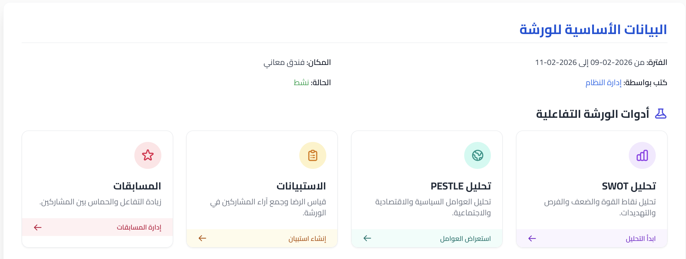
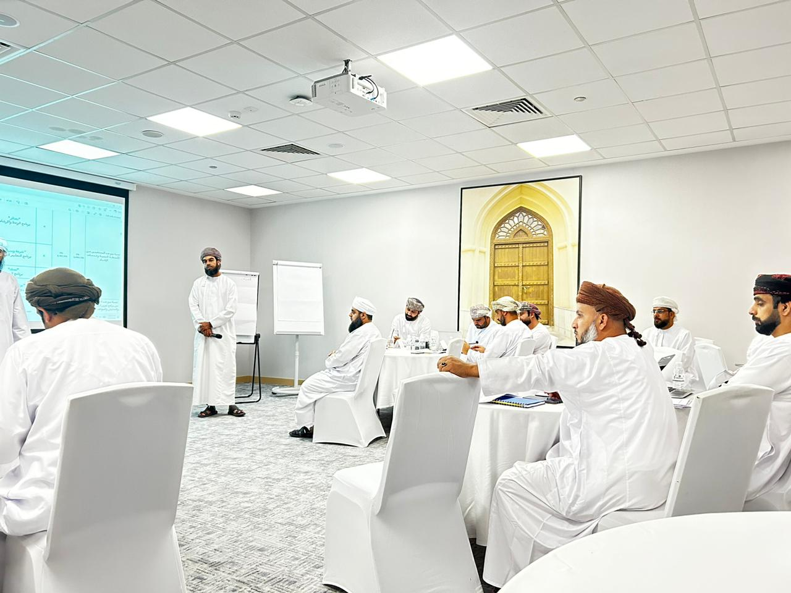
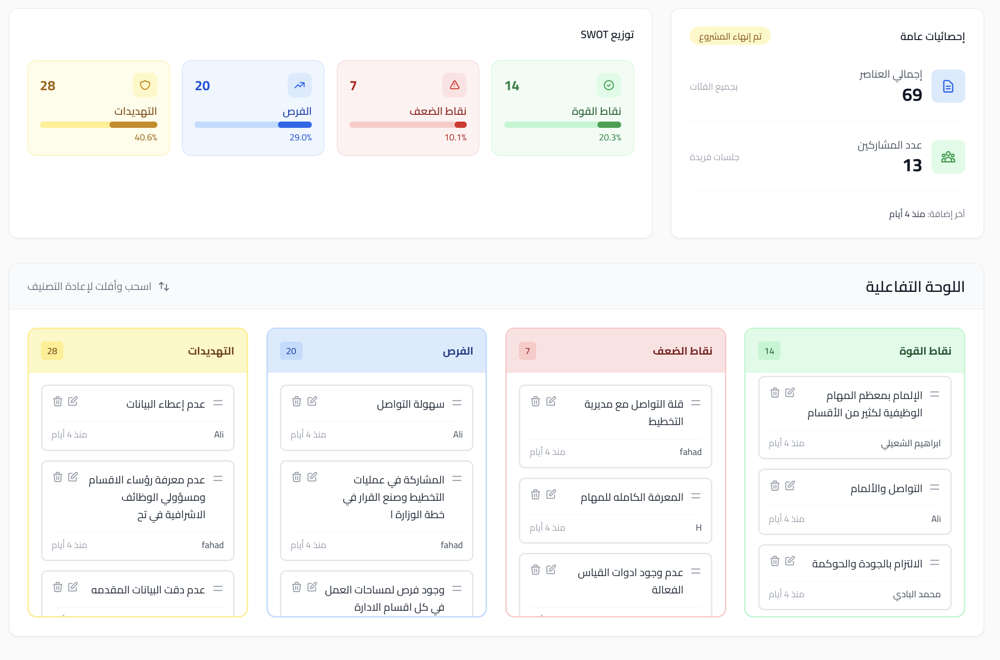
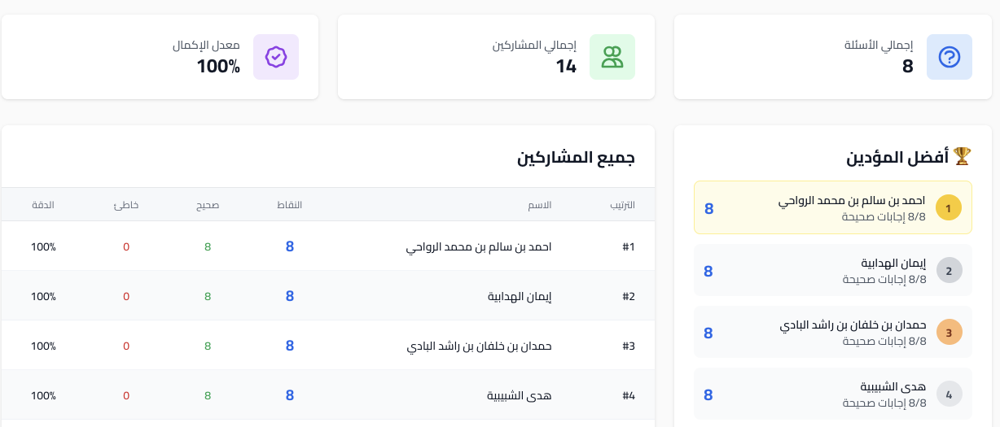
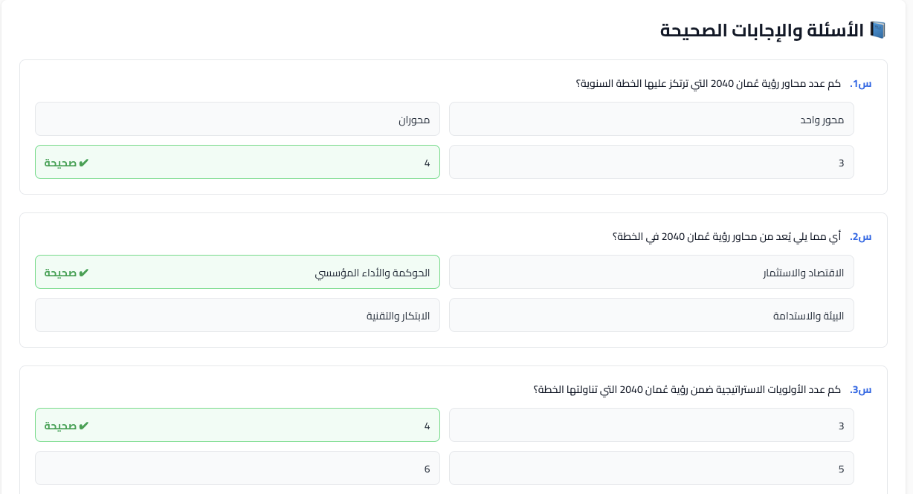
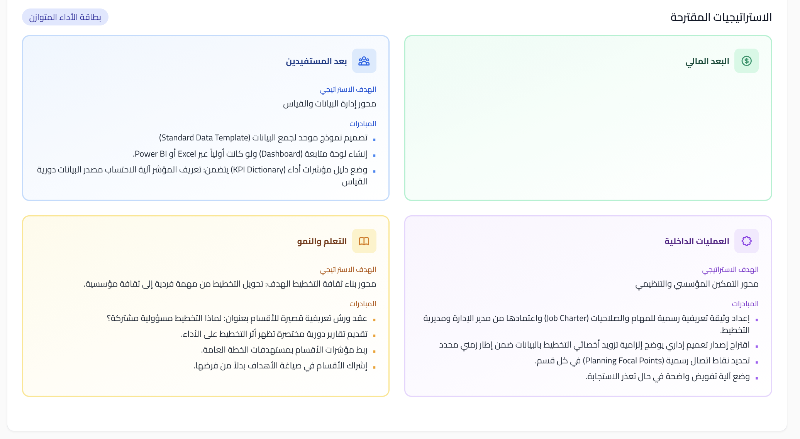

وزارة الأوقاف والشؤون الدينية - دائرة التخطيط والإحصاء
1. البيانات الأساسية للورشة

الشكل (1): البيانات الأساسية للورشة كما تظهر في النظام [3]
2. المشاركون
أحمد بن محمد بن عبدالله العوفي: مدير دائرة التخطيط والإحصاء.
حمدان بن راشد الخاطري: المدير المساعد، التخطيط والإحصاء.
مسعود سعيد المعولي: رئيس قسم التخطيط والدراسات، دائرة التخطيط والإحصاء.
حميد سالم المعمري: رئيس قسم الجودة، دائرة التخطيط.
ابراهيم بن عبدالله بن سليمان البيماني: رئيس قسم الإحصاء، دائرة التخطيط.
جمال بن جابر بن خالد الهنائي: فني حاسوب، دائرة التخطيط.
سامي بن علي بن محمد العويمري: أخصائي تخطيط ومتابعة، إدارة الأوقاف والشؤون الدينية
بمحافظة الداخلية نزوى.
محمد حبيب حسن الشحي: رئيس قسم الشؤون الإسلامية، إدارة أوقاف مسندم.
هلال بن محمد بن علي الزرعي: أخصائي تخطيط ومتابعة، إدارة الأوقاف والشؤون الدينية
بمحافظة جنوب الشرقية.
علي خميس سليمان السعيدي: باحث شؤون إدارية، المساجد.
فهد حميد عبدالله: أخصائي تخطيط، إدارة الأوقاف والشؤون الدينية بمحافظة شمال الباطنة.
إيمان بنت سعيد بن سليمان الهدابية: أخصائية تخطيط ومتابعة، دائرة التخطيط والإحصاء.
احمد بن سالم بن محمد الرواحي: رئيس قسم الشؤون الإدارية والمالية، إدارة الأوقاف
والشؤون الدينية بمحافظة الوسطى.
هلال بن ناصر بن علي القصابي: مدير دائرة الأوقاف بيت المال، دائرة الأوقاف وبيت
المال.
سلطان راشد سالم المحروقي: أخصائي تخطيط، إدارة الظاهرة.
سلطان بن زايد بن خليفة العبري: باحث شؤون إدارية ومنتدب أخصائي تخطيط ومكلف برئاسة
قسم الشؤون الإدارية والمالية، إدارة الأوقاف والشؤون الدينية بمحافظة جنوب الباطنة.
حمدان بن خلفان بن راشد البادي: أخصائي تخطيط، إدارة الأوقاف والشؤون الدينية بمحافظة
الظاهرة.
محمد راشد سالم البادي: أخصائي تخطيط، الشؤون الإدارية والمالية.
هدى راشد سعيد الشبيبية: باحثة شؤون إدارية، مكتب الأوقاف بالسويق.
أسماء بنت سعيد بن سليمان السيابية: مرشدة دينية، مركز التعليم والإرشاد النسوي.
ابراهيم بن سيف الشعيلي: باحث شؤون إسلامية، مكتب الأوقاف والشؤون الدينية بولاية
بهلاء.
يونس بن سعيد بن محمد الحديدي: موظف إداري، دائرة دراسات وبحوث الفتوى.
عبدالله بن سالم الهنائي: مدير، التنسيق والمتابعة.
إبراهيم بن حمد بن سيف العزري: رئيس قسم التقويم والتطوير، مكتب الإفتاء.
قبس بن هلال بن أحمد البهلاني: المدير المساعد بدائرة الزكاة، دائرة الزكاة.
خالد بن جمعه بن سالم الصلتي: مشرف إداري، دائرة التعريف بالإسلام والتبادل الثقافي
بمكتب الإفتاء.
هلال بن عبد الله بن أحمد الشيباني: باحث شؤون إسلامية، المديرية العامة للوعظ
والإرشاد / دائرة الزكاة.
عبير سيف الشبلية: مرشدة دينية، دائرة الإرشاد والتعليم.
فهد سالم الغنيمي: أخصائي تخطيط ومتابعة، شمال الشرقية.
شيخة بنت سعيد بن مسلم المحروقية: رئيسة قسم التعليم، دائرة التعليم والإرشاد النسوي.
سعيد بن سالم بن ناصر الريامي: مدير دائرة التعريف بالإسلام والتبادل الثقافي، مكتب
الإفتاء.
إسحاق بن سعيد بن حمد الرواحي: رئيس قسم العلاقات الخارجية، مكتب الإفتاء.
محمد بن مبارك بن علي الصلتي: منسق العلاقات الخارجية، مكتب الإفتاء.
فهد المقبالي: أخصائي تخطيط، إدارة أوقاف شمال الباطنة.
3. جلسات العمل والمحاور الرئيسية
أولاً: المقدمة الترحيبية والمؤشرات
تم استعراض أهداف قطاع الأوقاف ومؤشرات الأداء المعتمدة، وتحليل الفجوة بين المستهدف والنتائج الفعلية، قدمها
الفاضل/ حميد المعمري.
ثانياً: الخطط التفصيلية للقطاعات
تم استعراض الخطط التفصيلية لعدة قطاعات :
قطاع الأوقاف وإعمار المساجد: (تقديم: هلال القصابي).
قطاع الوعظ والإرشاد: (تقديم: جاسم السلماني).
قطاع الإفتاء: (تقديم: إبراهيم العزري).
قطاع القرآن الكريم: (تقديم: شيخة المحروقية).

الشكل (4): جانب من النقاشات والعروض التقديمية في القاعة [7]
ثالثاً: التحليل الاستراتيجي
بناء استراتيجية التكامل المؤسسي مع مديريات وإدارات ومكاتب الأوقاف وتمكين أخصائي التخطيط والمتابعة
تضمنت الورشة بإستخدام نظام إتقان الإلكترونية جلسة عملية لتحليل (SWOT) لتشخيص نقاط القوة والضعف والفرص
والتهديدات المرتبطة بدور أخصائي
التخطيط، بالإضافة إلى مسابقات لقياس الفهم.
تم بناء هذه الاستراتيجية بالتعاون مع أخصائي التخطيط والمتابعة عبر نظام إتقان الإلكتروني وربط ثلاث
منهجيات تحليليه وهي تحليل ( SWOT) وتحليل (TOWS ) وتحليل ( BSC)

الشكل (5): اللوحة التفاعلية لتحليل SWOT [8]


الشكل (6): نموذج من الأسئلة والإجابات الصحيحة في المسابقة
4. التحليل الاستراتيجي المتكامل ومخرجات التخطيط
باستخدام الذكاء الاصطناعي في العصف الذهني على نتائج تحليل SWOT، تم بناء
استراتيجية واحدة متماسكة يحمل كل توجه فيها مبادرات واضحة، وكل مبادرة مرتبطة
بمؤشرات قياس — ضمن إطار احترافي معتمد في التخطيط الاستراتيجي.
والنتيجة أدناه هي نموذج متكامل جاهز للتطبيق والمتابعة.
بطاقة الأداء المتوازن المتكاملة لأخصائي التخطيط
مبنية على تحليل SWOT والتوجهات التنفيذية
🏛️ المنظور الأول: النتائج المؤسسية (تحقيق الأداء والحوكمة)
الهدف الاستراتيجي: رفع جودة الخطط وتحقيق المستهدفات مع ضبط الالتزام المؤسسي.
المبادرات المدمجة:
إعداد خطط تشغيلية تفصيلية مرتبطة بمؤشرات أداء
تقارير متابعة ربع سنوية ترفع للإدارة العليا
ربط تقييمات الأقسام بدرجة الالتزام بالخطة
بناء مصفوفة مخاطر مرتبطة بالمشاريع
مؤشرات الأداء:
المؤشر
المستهدف
نسبة تحقيق مستهدفات الخطة
85% – 90%
نسبة المشاريع المنجزة في وقتها
≥ 90%
معدل تحسن المؤشرات سنوياً
5% – 10%
عدد الانحرافات غير المعالجة
انخفاض سنوي 50%
🤝 المنظور الثاني: المستفيدون (الأقسام والإدارة)
الهدف الاستراتيجي: تعزيز التعاون، وبناء ثقافة التخطيط.
المبادرات المدمجة:
إصدار وثيقة رسمية للمهام والصلاحيات
تعميم إلزامي لتوفير البيانات
تحديد نقاط اتصال تخطيطية بكل قسم
عقد ورش توعوية قصيرة للتخطيط
إشراك الأقسام في صياغة الأهداف
مؤشرات الأداء:
المؤشر
المستهدف
نسبة رضا الأقسام عن دعم التخطيط
≥ 85%
نسبة الالتزام بتسليم البيانات
≥ 90%
عدد الورش واللقاءات التنسيقية
لقاء شهري لكل قسم
نسبة مشاركة الأقسام في إعداد الأهداف
≥ 80%
⚙️ المنظور الثالث: العمليات الداخلية
الهدف الاستراتيجي: ضبط البيانات، تسريع التخطيط، وتحسين جودة المتابعة.
المبادرات المدمجة:
نموذج موحد لجمع البيانات
دليل مؤشرات KPI شامل
لوحة متابعة رقمية (Dashboard)
سياسة تدقيق البيانات
دليل إجراءات التخطيط
مؤشرات الأداء:
المؤشر
المستهدف
دقة البيانات
≥ 95%
زمن إعداد التقارير
خفض 30%
الالتزام بالنماذج الموحدة
100%
نسبة المؤشرات ذات منهجية واضحة
100%
عدد المتابعات الدورية
12 سنوياً
📈 المنظور الرابع: التعلم والنمو
الهدف الاستراتيجي: رفع الكفاءة التحليلية والعرض الاحترافي للتخطيط.
المبادرات المدمجة:
دورات تحليل بيانات وإحصاء تطبيقي
التدريب على Power BI
تطوير مهارات العرض التنفيذي
إنشاء بنك نماذج تخطيط
تطوير أدوات قياس داخلية
مؤشرات الأداء:
المؤشر
المستهدف
عدد البرامج التدريبية
3 – 5 سنوياً
نسبة تطوير أدوات القياس
100%
تحسن المهارات التحليلية
≥ 20%
عدد النماذج المطورة
≥ 10 نماذج
📅 الخطة الزمنية المدمجة (12 شهراً)
الربع
المبادرات الرئيسية
الربع الأول
اعتماد الصلاحيات — نماذج البيانات — ورشة ثقافة التخطيط
الربع الثاني
إطلاق Dashboard — دليل المؤشرات — بدء المتابعة
الربع الثالث
تدقيق البيانات — تحسين التقارير — المشاركة في الخطة العامة
الربع الرابع
مراجعة شاملة — مصفوفة مخاطر — تقرير إنجاز سنوي
🎯 مؤشرات نجاح أخصائي التخطيط (القياس الشخصي المهني)
#
المؤشر
1
التزام الأقسام بتسليم البيانات في موعدها
2
وضوح منهجيات المؤشرات وتوحيدها
3
عدد التقارير التحليلية المعتمدة
4
رضا الإدارة العليا عن جودة التخطيط
5
انخفاض أخطاء البيانات وتناقضاتها
6
تحسن نتائج الأداء المؤسسي الكلي
✅ الخلاصة الاستراتيجية المتكاملة
مهندس أداء مؤسسي: يصمم منظومة الأداء ويربطها بالأهداف الاستراتيجية.
قائد ثقافة تخطيط: يُرسّخ ثقافة التخطيط في جميع الأقسام.
توزيع المحاور على بطاقة الأداء المتوازن

الشكل (7): توزيع المحاور على بطاقة الأداء المتوازن
5. خطة العمل
المهمة
المسؤول
الأولوية
موعد التسليم
تصميم نموذج موحد لجمع البيانات (Standard Data Template).
أحمد العوفي
🔴 عالية
2026-02-23
إعداد وثيقة تعريفية رسمية للمهام والصلاحيات (Job Charter) واعتمادها من مدير الإدارة ومديرية
التخطيط.
حميد المعمري مع الحوكمة
🔴 عالية
2026-02-28
اقتراح إصدار تعميم إداري يوضح إلزامية تزويد أخصائي التخطيط بالبيانات ضمن إطار زمني محدد.
مسعود المعولي
🔴 عالية
2026-02-28
ربط مؤشرات الأقسام بمستهدفات الخطة العامة.
حمدان الخاطري مع أخصائي التخطيط
🔴 عالية
2026-03-02
إنشاء لوحة متابعة (Dashboard) ولو كانت أولياً عبر Excel أو Power BI.
ابراهيم البيماني
🔴 عالية
2026-03-07
وضع آلية تفويض واضحة في حال تعذر الاستجابة.
الحوكمة
🔴 عالية
2026-03-07
وضع دليل مؤشرات أداء (KPI Dictionary) يتضمن: تعريف المؤشر، آلية الاحتساب، مصدر البيانات،
دورية القياس.
إيمان الهدابية
🔴 عالية
2026-03-14
تحديد نقاط اتصال رسمية (Planning Focal Points) في كل قسم.
حميد المعمري مع أخصائي التخطيط
🟡 متوسطة
2026-03-02
عقد ورش تعريفية قصيرة للأقسام بعنوان: لماذا التخطيط مسؤولية مشتركة؟
أخصائي التخطيط وفريق التخطيط
🟡 متوسطة
2026-03-14
6. نتائج استبيان تقييم الورشة
شارك في تقييم الورشة 12 مشاركاً عبر استبيان إلكتروني تضمّن تسعة محاور رئيسية، وُزّن كل
محور
على مقياس من 1 إلى 5. وفيما يلي الملخص التحليلي لنتائج التقييم.
4.87
من 5.00
المعدل العام للرضا
⭐ 97.4%
نسبة الرضا الكلية
👥 12
عدد المشاركين في الاستبيان
نتائج التقييم حسب المحور
#
المحور
المعدل
التقييم
التمثيل البياني
1
وضوح أهداف الورشة
5.00
★★★★★
100%
2
تنظيم المادة وترتيب الأفكار
4.75
★★★★★
95%
3
الجانب التطبيقي والأمثلة العملية
4.75
★★★★★
95%
4
إلمام المدرب بموضوع الورشة
4.83
★★★★★
96.7%
5
وضوح الشرح وأسلوب العرض
4.83
★★★★★
96.7%
6
تفاعل المدرب مع أسئلة واستفسارات الحضور
5.00
★★★★★
100%
7
ملائمة القاعة والتجهيزات والتغذية والغرف
4.83
★★★★★
96.7%
8
جودة الصوت والصورة
4.92
★★★★★
98.3%
9
مدى رضاك العام عن الورشة
4.92
★★★★★
98.3%
المعدل العام
4.87
★★★★★
97.4%
البيانات التفصيلية لاستجابات المشاركين
م
وضوح الأهداف
تنظيم المادة
الجانب التطبيقي
إلمام المدرب
وضوح الشرح
تفاعل المدرب
ملائمة القاعة
جودة الصوت
الرضا العام
1
5
5
5
5
5
5
5
5
5
2
5
5
5
5
5
5
5
5
5
3
5
5
5
5
5
5
5
5
5
4
5
4
4
5
4
5
5
5
4
5
5
5
5
4
5
5
5
5
5
6
5
5
5
5
5
5
5
5
5
7
5
5
5
5
5
5
5
5
5
8
5
4
4
4
4
5
5
5
5
9
5
5
5
5
5
5
4
5
5
10
5
4
4
5
5
5
4
4
5
11
5
5
5
5
5
5
5
5
5
12
5
5
5
5
5
5
5
5
5
المعدل
5.00
4.75
4.75
4.83
4.83
5.00
4.83
4.92
4.92
أعلى تقييم (5.00/5): وضوح أهداف الورشة، وتفاعل المدرب مع الحضور — مما يدل على
قوة التخطيط والتواصل.
الجانب التطبيقي وتنظيم المادة (4.75/5): حصلا على أعلى نسبة من التقييمات
المتنوعة، مما يشير إلى فرصة لمزيد من الأمثلة العملية في الدورات القادمة.
الرضا العام (4.92/5): يعكس نجاح الورشة بشكل شامل وارتفاع مستوى تحقيق الأهداف
المرجوة لدى المشاركين.